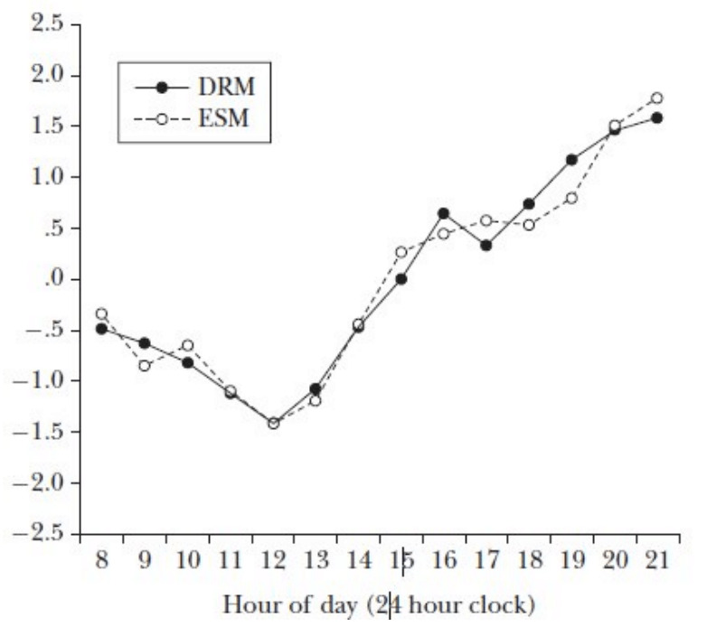

How Happy Does This Make You?
Daniel Kahneman on how to measure happiness
If you like reading about philosophy, here's a free, weekly newsletter with articles just like this one: Send it to me!
Life satisfaction and utility
We talked previously about some approaches one could use to create a happiness survey, and which kinds of questions would be useful for that. Now we will have a look at how researchers try to actually measure happiness.
If you wanted to determine an individual’s happiness in a particular time period, it would first be useful to clarify what kind of happiness you’d like to measure. So it would be useful, for example, to clarify that we’re not measuring long-term satisfaction with one’s life as a whole, but the moment-to-moment changes in happiness throughout a day; or that we want to know the effects on daily happiness of a morning commute, of a good lunch, or of a night out. These are all short-term kinds of happiness that can be attributed directly to a particular situation or stimulus. There are more what we would perhaps all “pleasure” rather than “long-term happiness” or “life satisfaction.” Economists often use the word “utility” to describe this kind of subjective experience: a short-term change in happiness that is attributable to a particular situation or event in one’s life. Therefore, one can talk of the utility of a particular event, for example the utility of a night at a pub, the utility of having breakfast with one’s family, but perhaps also of the utility of reading an educational book. In this last case the happiness change is not short-term, but it is directly attributable to a particular cause, and thus it can still be treated as a kind of utility: the utility resulting from reading that book.
The whole point of using utility as a concept is to make changes in happiness (1) measurable; and (2) attributable to particular causes; and thus, accessible to scientific examination. If we extended “utility” to encompass all sorts of diffuse long-term psychological effects, although the new concept might reflect some other valuable aspects of “happiness,” it would not be as easy to isolate changes in happiness and to attribute them to particular causes; and thus, the concept would be less useful in a scientific way.
Subjective and objective utility
Another interesting distinction would be whether we want to measure utility subjectively or objectively. Imagine someone who is a prominent political prisoner because he opposes an oppressive and unjust government in his country. The political prisoner is objectively in a bad situation: being in prison is a state of low objective utility. If we could free him, for example by making a deal with the government of this country, or by bribing the corrupt police chief, we would objectively increase the prisoner’s utility. But this might not make him subjectively happier! We can well imagine that this prisoner might subjectively prefer being in prison for a just cause, rather than being free as the result of bribing a corrupt official. – Many more examples like that clearly show that objective and subjective evaluations of personal utility might differ significantly. We discussed this issue in more depth in a previous post.
Measuring utility directly
The most direct way to measure “experienced utility” (Kahneman) would be to attempt to measure it just as it happens. This can be done, for example, when we want to measure an audience’s reaction to scenes in a movie. We could give each person in the audience a dial that is directly connected to a computer, and that is labeled “very happy,” “somewhat happy,” “indifferent,” “bored,” “scared,” “sad,” and so on. Every time a person’s mood changes while watching the movie, he or she would turn the dial to the new position that reflects their momentary mood. The computer would record all changes and could then produce a diagram of mood changes over time for every single person in the audience, and aggregate these results into total mood over time, or even correlated with particular scenes in the movie.
Although this method would indeed capture mood changes perfectly, it is easy to see that it is not particularly practical outside of a lab situation. Nobody would want to carry a dial around when walking on the street, or while attending a party or a romantic dinner. And what about swimming, scuba diving, or bungee jumping with a dial in hand? How about landing an airplane or performing a surgical operation on a patient while trying to dial the precise emotional state of the moment into the device? Obviously, this isn’t going to work well, and just the fact that one carries and manipulates the dial all the time is going to affect the experience itself and alter the measurements! Having a romantic candlelight moment is just not going to be the same if one always has to keep the dial adjusted to the correct amount of “excitement,” “joy,” “apprehension,” “sexual attraction” and “stress” throughout every single moment of the experience. In such a case, rather then providing us with valuable data, the measuring process will itself distort the experience, so that, in effect, we will be measuring the mood changes in trying to operate a dial while meeting someone, rather than just meeting someone. Not to speak of all the situations where operating a dial in addition to performing the main task of the moment would be dangerous, impossible or outright illegal (driving, diving, flying an airplane, operating on a patient, taking an exam).
Experience Sampling Method
So what can we do to get our happiness measurements without putting our subjects to danger or asking them to commit crimes?
One way would be to separate the experience itself from the feedback process, but to keep the two as close as possible, so that we still get good data on the actual change of the subject’s mood over time. So we could for example have a mobile phone app that sends a notification once every half hour, asking the subject to fill out a form with information about what he or she is doing right now, with whom, how it feels, and how one’s general happiness is. This would provide us with a regular sampling of the subjects experience, hence the name “Experience Sampling Method.”
The problems with this are similar to the problems of the direct measurement method. Although it is less intrusive, still it would require the subject to stop what he or she is doing every half hour, in order to fill out the survey form. This might be inconvenient (at a romantic dinner), illegal (while driving a car), or impossible (while landing an airplane). But if we allow subjects to skip samples, then this will likely change the data itself. We know that, as soon as subjects report happiness from memory, the reported satisfaction values are biased in particular ways (see a separate post on that effect).
So what can we do?
Day Reconstruction Method
Kahneman suggests using the “Day Reconstruction Method.” In order to understand why things are so complicated, let us briefly remember what we talked about before:
- “The remembering self” has different priorities from the “experiencing self.”
- Memories emphasise high/low points of an experience and endings; while the duration of an experience is almost completely neglected.
- The context surrounding a survey can influence the results. For example, the weather, or finding a coin by accident, or previous questions in the same survey can alter the answer of the subject.
- Luckily though, reminding subjects of these context effects seems to cancel the effect to a great extent. That is, awareness of the influence of, say, the weather on reported happiness reduces or cancels its effect on the subject’s answers.
So we need a survey method that:
- Does not interfere too much with the daily activities of people,
- forces subjects to actively remember the duration of events, rather than only the high/low points and endings; and, finally,
- draws attention to the context in which an activity took place and to the present context (insofar as it is relevant to the outcome of the survey).
The Day Reconstruction Method (DRM) does all these things. Kahneman (2006, p.10):
When we compare the Experience Sampling Method with the Day Reconstruction Method, they produce very similar results, which is an indication that the DRM actually works well in offsetting the memory effects that otherwise tend to affect retrospective self-evaluations of happiness:

From Kahneman (2006)
Take note of the particular features of the method that help accomplish this:
- Selected episodes are evaluated.
- The begin/end time is recorded (to cancel the memory effect of neglecting duration).
- The context of the action is recorded and made aware (what, where, with whom).
Measuring emotions
It is interesting to see how Kahneman measures emotions. The full set of descriptors is:
First, why would we measure only three positive, but six negative categories? The answer is that positive emotions are much stronger correlated with each other than negative emotions. Think about it: it is easy to imagine being depressed without being angry, or being worried without feeling criticised; but it almost impossible to feel happy without enjoying oneself; or to feel like enjoying oneself without feeling emotional warmth.

Generally, our feelings tend to differentiate much better between negative than between positive emotions, and this is understandable: in nature, it is more important for an animal’s survival to be able to distinguish between fear, depression, anxiety, worry and criticism than it is to distinguish between feeling warm, cozy, happy and loved. The negative triggers of our emotions present specific threats to our survival or well-being, and these threats must be dealt with in specific, appropriate ways, while the positive emotions generally don’t require a specific response. If I’m happy, I stay where I am, and the same response is appropriate whenever I feel warm, loved, or enjoying myself. No harm is likely to come from mis-identifying a positive emotion.
In the opening sentence of his novel ‘Anna Karenina,’ Tolstoy expresses a similar idea: “All happy families are alike; each unhappy family is unhappy in its own way.”
Personal scale, Net Affect, and U-index
Now if we only asked subjects to indicate their emotions on a scale of 1-6, then we might run into another problem, which is the problem of the personal scale: Some people are much more expressive about their emotions: they seem to feel stronger about things, and then also to express their feelings in a stronger way. While others are more reserved: perhaps they feel less strongly, are more emotionally withdrawn, and also perhaps more reluctant to report on their feelings. So the same “objective” feeling might register differently in a survey, depending on how emotionally involved and/or extroverted the subjects are.
In order to solve this problem, Kahneman does not look at the raw reported emotions; rather he uses another measure, the Net Affect: The Net Affect is the average of the reported positive emotions minus the average of the negative emotions. In using Net Affect, of course, most of the information on specific emotions is lost; but we get a number that can be compared better to the results of other respondents, independently of their particular evaluations of specific feelings, and also independently of whether they use all of their scale or only part of it: As long as people use their scales in the same way for positive and negative emotions, subtracting the one from the other will result in a number that keeps the two comparable. For an expressive, strongly feeling individual, 6 (positive) minus 4 (negative) will result in a Net Affect of 2. For an introverted, relatively indifferent individual, 3 (positive) minus 1 (negative) will produce the same result. If all we are interested in is the relative strength of positive vs negative emotions in particular situations, then the Net Affect is not a bad way of measuring this.
And finally, Kahneman uses the U-index as the proportion of time (aggregated over all respondents), in which the highest rated feeling was a negative feeling (‘U’ for ‘unpleasant’). So the U-index omits even more information, and boils down all responses to just one number: how undesirable was a particular experience for all respondents (viewed together).
It turns out that the U-index quite nicely fits what we would expect from our experience:
- Intimate relations come out on top, with the lowest U-index.
- Relaxing is better than eating; but when eating, dinner is more pleasant than lunch (because it is sometimes romantic, usually removed from work, and the begin of a leisurely evening).
- Surprisingly, shopping is valued as slightly more pleasant than computer activity outside work. Since we would think that computer activity outside work is mainly play, this is strange. But then, perhaps “shopping” includes not only groceries, but also recreational shopping (personally I cannot imagine this as pleasant, but obviously the majority of Kahneman’s respondents does).
- Worst of all in terms of pleasure is the morning commute: stuck in traffic, with the prospect of a full day’s work ahead.
The beauty of childcare
Kahneman reports that, using these survey techniques, childcare and work rank much lower in the U-index table than they do in other surveys. The reason?
Usually, we tend to answer surveys using our memory, which introduces the effects we already discussed in another post. We also tend to romanticise childcare, thinking more of the cuteness of children and the love we feel for them, rather than the harsh reality of changing the nappies.
The Day Reconstruction Method, in contrast, emphasises precise emotional recall: both the duration and the precise activity are recalled, together with the context of the activity and the emotions felt at that time. This is likely to give a more precise result that romanticises the activity less and that provides a more accurate assessment of the true hedonic value of childcare at the moment that it is performed.
Let’s end this post here. We will now leave the topic of happiness surveys, and have a look at what else science can tell us about becoming happier in the following posts. Stay tuned.
This is part 4 of a series of posts on happiness. Find the whole series here.
Read more…
Kahneman, Daniel and Krueger, Alan B. (2006). Developments in the Measurement of Subjective Well-Being. Journal of Economic Perspectives, 20(1), pp.3-24.